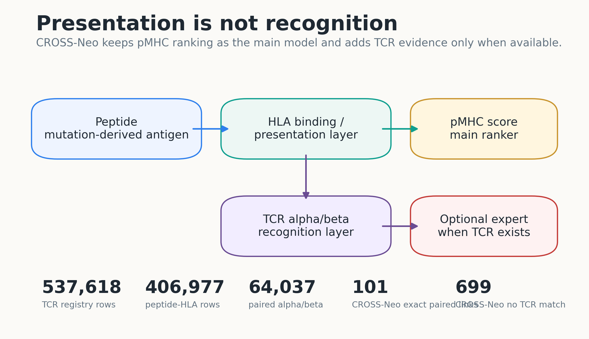

01Decision
What this module is allowed to claim now
Promote now
DiagnosticWetlab
Use as optional expert for TCR-available cases and prioritization.
Hold
Main method
No universal TCR-aware neoantigen claim until strict external paired-TCR benchmarks support it.
Best practical score
0.784
pMTnet + TEPCAM mean ensemble AUPRC; AUROC 0.765.
Bottom line: keep CROSS-Neo pMHC as the primary ranker. Add pMTnet + TEPCAM as a TCR-aware optional recognition layer when modelable TCR evidence exists.
02TCR Data Registry
Canonical local TCR-pMHC inventory
123,035
rows with any TCR sequence
64,037
paired alpha/beta rows
72,291
cancer-context rows
899
structure/PDB evidence rows
| source dataset | n | paired tcr | any tcr | peptide hla | cancer context | pathogen context | structures |
|---|---|---|---|---|---|---|---|
| IEDB_tcell_full_export | 397,627 | 0.0000 | 0.0000 | 291,583 | 52,112 | 193,413 | 308.0000 |
| VDJdb | 62,177 | 30,594 | 62,177 | 62,177 | 343.0000 | 52,765 | 278.0000 |
| McPAS-TCR | 40,731 | 12,717 | 40,113 | 16,304 | 3,880 | 31,855 | 0.0000 |
| VDJdb_10x_chunk | 20,358 | 20,358 | 20,358 | 20,358 | 0.0000 | 19,863 | 0.0000 |
| NEPdb | 15,912 | 58.0000 | 74.0000 | 15,912 | 15,912 | 0.0000 | 0.0000 |
| IEDB_tcell_api | 500.0000 | 0.0000 | 0.0000 | 330.0000 | 43.0000 | 377.0000 | 0.0000 |
| VDJdb_PDB_chunk | 313.0000 | 310.0000 | 313.0000 | 313.0000 | 1.0000 | 96.0000 | 313.0000 |
03CROSS-Neo Linkage
TCR evidence linked to main neoantigen registry
2,016/2,715 CROSS-Neo rows have some TCR-resource overlap; 699 have no TCR match. Peptide-only and near-peptide links are diagnostic evidence only.
| tcr link category | n neo rows | mean tcr evidence count | paired tcr evidence count | cancer context evidence count |
|---|---|---|---|---|
| peptide_hla_match | 1,731 | 1.7932 | 0.0000 | 2,626 |
| no_tcr_match | 699.0000 | 0.0000 | 0.0000 | 0.0000 |
| near_peptide_match | 170.0000 | 19.9529 | 790.0000 | 498.0000 |
| exact_tcr_pmhc_match | 101.0000 | 31.8317 | 810.0000 | 2,535 |
| peptide_only_match | 14.0000 | 1.9286 | 0.0000 | 20.0000 |
04External TCR Experts
pMTnet, TEPCAM, ERGO-II, PanPep, NetTCR and structure tools
Benchmark: six 100-positive challenge panels with same-panel shuffled-TCR decoys. Decoys are synthetic, so this is model selection evidence, not external SOTA validation.
| model | n | auprc | auroc | positive mean | negative mean |
|---|---|---|---|---|---|
| mean_pMTnet_TEPCAM | 1,191 | 0.7841 | 0.7652 | 0.6920 | 0.5108 |
| logreg_groupcv_pMTnet_TEPCAM | 1,177 | 0.7803 | 0.7683 | 0.5970 | 0.4029 |
| pMTnet | 1,177 | 0.7479 | 0.7255 | 0.7540 | 0.5413 |
| TEPCAM | 1,191 | 0.6878 | 0.6970 | 0.6321 | 0.4812 |
Source-heldout ensemble
| heldout source | n | auprc | auroc | positive mean | negative mean |
|---|---|---|---|---|---|
| VDJdb | 538.0000 | 0.6523 | 0.6040 | 0.3801 | 0.2710 |
| McPAS-TCR | 448.0000 | 0.8025 | 0.8232 | 0.6505 | 0.4579 |
| VDJdb_10x_chunk | 191.0000 | 0.8408 | 0.8340 | 0.6084 | 0.3820 |
Runtime model inventory
| model | priority | input | local status | claim use | blocker |
|---|---|---|---|---|---|
| NetTCR-2.2 | P0 | peptide + CDR1/2/3 alpha + CDR1/2/3 beta | local_ready:/data/thca/_tmp/relocated_2026_05_09/NetTCR-2.2 | TCR-available subset baseline/expert only | CROSS-Neo registry lacks CDR1/CDR2; need V-gene CDR reconstruction or full-chain TCR import |
| ERGO-II | P0 | peptide + CDR3 beta; optional alpha, V/J, MHC, T-cell type | local_ready:/data/thca/tcr_model_repos/ERGO-II | strong next practical model because CDR3-only path matches current registry | CROSS-Neo input adapter and strict split evaluation |
| pMTnet | P0/P1 | CDR3 beta + peptide + HLA | local_ready:/data/thca/tcr_model_repos/pMTnet | diagnostic peptide-HLA-TCR score; useful for beta-only rows | strict leakage-filtered benchmark and score calibration |
| TSpred | P1 | paired alpha/beta TCR sequence + epitope | local_ready:/data/thca/tcr_model_repos/TSpred | paired TCR subset benchmark; seen/unseen epitope split baseline | requires CDR1/CDR2 reconstruction for registry-scale use |
| PanPep | P1 | peptide + TCR sequence, commonly CDR3 beta in public usage; extensions reported for alpha/alpha-beta | local_ready:/data/thca/tcr_model_repos/PanPep | unseen-peptide stress test and negative-control/diagnostic baseline | weak zero-shot pilot; try few-shot only if compatible support labels exist |
| TEPCAM | P1/P2 | TCR sequence + peptide | local_ready:/data/thca/tcr_model_repos/TEPCAM | sequence-only TCRbeta-peptide expert; compare to pMTnet | no HLA input; needs strict source/epitope-heldout validation |
| TEINet | P2 | CDR3 beta + epitope | not_found | legacy/secondary beta-only baseline | install and compare against ERGO/pMTnet first |
| TCR-H | P1/P2 | CDR3 beta + epitope | local_ready:/data/thca/tcr_model_repos/TCR-H | explainable low-compute hard-split baseline | clone and map feature script |
| MixTCRpred | P2 | paired/dual alpha TCR context + beta + epitope depending dataset | not_found | dual-alpha case-study model; secondary benchmark | repo/tool packaging verification |
| TCRen | P1/P2 | TCR-pMHC model/structure or homology model + peptide context | not_found | structure-guided case diagnostics, especially unseen epitopes | requires modeled/experimental TCR-pMHC structures |
| TCRLens | P2 | TCR-pMHC-I structure/interface graph | not_found | future structure branch benchmark | requires actual TCR-pMHC-I structures and installation |
| tFold-TCR | P1 | full TCR alpha/beta + MHC + beta2M + peptide sequences | not_found | structure feature generator, not recognition classifier alone | not installed; full-chain sequences missing for many jobs |
05Wetlab Candidate Rescoring
External expert scores over exact peptide-HLA TCR rows
Priority 1
HMTEVVRHC
HLA-A*02:01 · external mean 0.712 · adjusted priority 2.195
Priority 2
GADGVGKSAL
HLA-C*08:02 · external mean 0.570 · adjusted priority 1.932
| peptide | hla 4digit | external tcr pairs total | external tcr expert mean | external tcr expert max | wetlab priority score external adjusted |
|---|---|---|---|---|---|
| HMTEVVRHC | HLA-A*02:01 | 4.0000 | 0.7121 | 0.8029 | 2.1952 |
| GADGVGKSAL | HLA-C*08:02 | 5.0000 | 0.5703 | 0.6790 | 1.9320 |
| MSFSHLFYL | HLA-A*02:01 | NA | NA | NA | 1.6967 |
| VLMMPFSIV | HLA-A*02:01 | NA | NA | NA | 1.6939 |
| MAWSLGVLVALPFPL | HLA-B*40:01 | NA | NA | NA | 1.6698 |
| MAWSLGVLVALPFPL | HLA-A*02:01 | NA | NA | NA | 1.6698 |
| FSLVFLVYSVFKNNV | HLA-A*11:01 | NA | NA | NA | 1.6436 |
| MAWSLGVLVALPFPL | HLA-B*18:01 | NA | NA | NA | 1.6380 |
| MSSLAATTFHWKKCR | HLA-B*07:02 | NA | NA | NA | 1.6170 |
| MSSLAATTFHWKKCR | HLA-A*68:01 | NA | NA | NA | 1.6170 |
| MAWSLGVLVALPFPL | HLA-A*25:01 | NA | NA | NA | 1.6153 |
| MSSLAATTFHWKKCR | HLA-B*35:03 | NA | NA | NA | 1.6136 |
| LLDIVAPK | HLA-A*11:01 | NA | NA | NA | 1.6103 |
| FSLVFLVYSVFKNNV | HLA-B*38:01 | NA | NA | NA | 1.5982 |
| FSLVFLVYSVFKNNV | HLA-B*52:01 | NA | NA | NA | 1.5957 |
06MD Escalation Queue
Prediction-fragile, high-value candidates for expensive simulation
P0 MD cases
2
exact paired TCR evidence plus external expert support
Top MD case
HMTEVVRHC
HLA-A*02:01 · score 0.791
PDB pilots
10
existing TCR-pMHC pilot complexes; minimized 2/2; smoke dynamics 2/2
Runtime reality: OpenMM/MDTraj/PDBFixer are available locally, but only CPU/Reference OpenMM platforms are present. Production MD should run on a CUDA-enabled GPU pod. MD is not treated as proof of immunogenicity.
| peptide | hla 4digit | md tier | md escalation score | prediction fragility score | recommended md protocol |
|---|---|---|---|---|---|
| HMTEVVRHC | HLA-A*02:01 | P0_MD_TCR_pMHC | 0.7907 | 0.3596 | chain_recovery_then_TCR-pMHC_MD_3x100ns |
| GADGVGKSAL | HLA-C*08:02 | P0_MD_TCR_pMHC | 0.5710 | 0.3163 | chain_recovery_then_TCR-pMHC_MD_3x100ns |
| MAWSLGVLVALPFPL | HLA-B*40:01 | P1_MD_pMHC_bulge | 0.4765 | 0.8604 | pMHC_bulge_stability_MD_3x50ns |
| MAWSLGVLVALPFPL | HLA-A*02:01 | P1_MD_pMHC_bulge | 0.4765 | 0.8604 | pMHC_bulge_stability_MD_3x50ns |
| FSLVFLVYSVFKNNV | HLA-A*11:01 | P1_MD_pMHC_bulge | 0.4502 | 0.8397 | pMHC_bulge_stability_MD_3x50ns |
| MAWSLGVLVALPFPL | HLA-B*18:01 | P1_MD_pMHC_bulge | 0.4485 | 0.8497 | pMHC_bulge_stability_MD_3x50ns |
| MAWSLGVLVALPFPL | HLA-A*25:01 | P1_MD_pMHC_bulge | 0.4285 | 0.8422 | pMHC_bulge_stability_MD_3x50ns |
| MSSLAATTFHWKKCR | HLA-B*07:02 | P1_MD_pMHC_bulge | 0.4280 | 0.8354 | pMHC_bulge_stability_MD_3x50ns |
| MSSLAATTFHWKKCR | HLA-A*68:01 | P1_MD_pMHC_bulge | 0.4280 | 0.8354 | pMHC_bulge_stability_MD_3x50ns |
| MSSLAATTFHWKKCR | HLA-B*35:03 | P1_MD_pMHC_bulge | 0.4249 | 0.8342 | pMHC_bulge_stability_MD_3x50ns |
| FSLVFLVYSVFKNNV | HLA-B*38:01 | P1_MD_pMHC_bulge | 0.4092 | 0.8216 | pMHC_bulge_stability_MD_3x50ns |
| FSLVFLVYSVFKNNV | HLA-B*52:01 | P1_MD_pMHC_bulge | 0.4071 | 0.8209 | pMHC_bulge_stability_MD_3x50ns |
P0 solved-structure pilots
| target peptide | hla 4digit | pdb id | peptide chain | selected chains | contacts tcr peptide | pilot status |
|---|---|---|---|---|---|---|
| HMTEVVRHC | HLA-A*02:01 | 6VRN | P | A|B|D|E|P | 254.0000 | ready_TCR_pMHC_PDB_pilot |
| HMTEVVRHC | HLA-A*02:01 | 6VRM | P | A|B|D|E|P | 214.0000 | ready_TCR_pMHC_PDB_pilot |
| HMTEVVRHC | HLA-A*02:01 | 6VQO | P | A|B|D|E|P | 200.0000 | ready_TCR_pMHC_PDB_pilot |
| HMTEVVRHC | HLA-A*02:01 | 6VQO | Q | F|G|H|J|Q | 196.0000 | ready_TCR_pMHC_PDB_pilot |
| HMTEVVRHC | HLA-A*02:01 | 7RM4 | H | F|G|H|I|J | 195.0000 | ready_TCR_pMHC_PDB_pilot |
| HMTEVVRHC | HLA-A*02:01 | 7RM4 | C | A|B|C|D|E | 184.0000 | ready_TCR_pMHC_PDB_pilot |
| HMTEVVRHC | HLA-A*02:01 | 7RM4 | R | P|Q|R|S|T | 183.0000 | ready_TCR_pMHC_PDB_pilot |
| HMTEVVRHC | HLA-A*02:01 | 7RM4 | M | K|L|M|N|O | 175.0000 | ready_TCR_pMHC_PDB_pilot |
| GADGVGKSAL | HLA-C*08:02 | 6UON | F | D|E|F|G|H | 90.0000 | ready_TCR_pMHC_PDB_pilot |
| GADGVGKSAL | HLA-C*08:02 | 6UON | C | A|B|C|I|J | 73.0000 | ready_TCR_pMHC_PDB_pilot |
OpenMM repair/minimization sanity check
| target peptide | hla 4digit | pdb id | status | atom count after repair | energy initial kj mol | energy minimized kj mol |
|---|---|---|---|---|---|---|
| GADGVGKSAL | HLA-C*08:02 | 6UON | ok | 12,778 | 124,425 | -42,551 |
| HMTEVVRHC | HLA-A*02:01 | 6VRN | ok | 12,775 | 987,922 | 16,664 |
OpenMM local smoke dynamics
| smoke id | status | steps | peptide rmsd final nm | peptide mhc contacts final | peptide tcr contacts final |
|---|---|---|---|---|---|
| 6UON_GADGVGKSAL | ok | 200.0000 | 0.0144 | 245.0000 | 58.0000 |
| 6VRN_HMTEVVRHC | ok | 200.0000 | 0.0091 | 383.0000 | 27.0000 |
RunPod package: openmm_p0_10ns_pilot_package_2026_05_09.tar.gz
07Structure Branch Status
Useful, but currently sequence-limited
Current boundary: structure features are parser/QC and readiness diagnostics. No mutant-WT interface-delta claim yet because full TCR/MHC chains are missing for most rows.
| priority | tool | claim status | n jobs |
|---|---|---|---|
| P0 | blocked_missing_full_tcr_sequence | diagnostic_manifest_only_requires_full_tcr | 507.0000 |
| P1 | blocked_missing_full_tcr_sequence | diagnostic_manifest_only_requires_full_tcr | 131.0000 |
08Figure Package
PNG/PDF figures generated from local result tables


{kind=link}
{kind=link}
{kind=link}
{kind=link}
09Claim Boundary
Allowed
Optional TCR expert, diagnostic case interpretation, wetlab prioritization, and missingness reality.
Forbidden for now
Clinical utility, universal TCR-aware prediction, structure-is-correct claims, and pathogen-to-cancer label transfer.
10Sources And Paths
Every number on this page comes from these local artifacts
/home/seungho/personal/THCA_data_analysis/project/results/cross_neo_v2_sota_sprint_2026_05_09/tcr_extension/tcr_registry_source_counts.tsv
/home/seungho/personal/THCA_data_analysis/project/results/cross_neo_v2_sota_sprint_2026_05_09/tcr_extension/tcr_neo_linkage_summary.tsv
/home/seungho/personal/THCA_data_analysis/project/results/cross_neo_v2_sota_sprint_2026_05_09/tcr_extension/model_discovery/external_tcr_expert_benchmark/external_tcr_expert_benchmark_metrics.tsv
/home/seungho/personal/THCA_data_analysis/project/results/cross_neo_v2_sota_sprint_2026_05_09/tcr_extension/model_discovery/wetlab_external_tcr_expert_scores/wetlab_candidates_external_tcr_expert_ranked.tsv
/home/seungho/personal/THCA_data_analysis/project/results/cross_neo_v2_sota_sprint_2026_05_09/tcr_extension/md_escalation/md_escalation_queue_top20.tsv
/home/seungho/personal/THCA_data_analysis/project/results/cross_neo_v2_sota_sprint_2026_05_09/tcr_extension/TCR_EXTENSION_REVIEWER_QA.md
/home/seungho/personal/THCA_data_analysis/project/results/cross_neo_v2_sota_sprint_2026_05_09/tcr_extension/figures
Reviewer packet: cross_neo_tcr_reviewer_packet_2026_05_09.zip